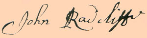

|
by Stefan Bielinski John Radcliff probably was born in England during the mid-seventeenth century. He probably came to America as a young soldier. By the 1680s, he was a member of the garrison on duty at the fort at Albany. About that time, he married Rachel Van Valkenburgh, daughter of the Albany night watchman. Leaving the barracks, he moved in with her parents on Albany's "Southside." By 1706, the couple had baptized eleven children in the Albany Dutch church where both parents were members. In 1699, John Radcliff was among the "Principal Members of the Church" who signed a petition to the "Classis of Amsterdam." John Radcliff may have been a career garrison soldier. During the 1680s and 90s, his name appeared on muster rolls and pay lists as a soldier and a corporal in the Albany garrison company.  However, existing records are incomplete and probably provide only a part of his military service. In 1697, he was appointed city porter - giving him the right to make deliveries within the Albany stockade. Later he served as watchman, gatekeeper, and cryer - salaried service positions often reserved for former soldiers. He derived additional income from maintaining the blockhouse and for digging graves. John Radcliff was an early Albany city retainer. For a time, Radcliff leased space in the Dutch church poorhouse. In 1704, John and Rachel Radcliff purchased land from her family near their home at the intersection of Green and Beaver Streets. Living among other active and former garrison soldiers, his modest first ward holdings were listed on Albany assessment rolls. John Radcliff's name disappeared from the community record following his appearance at an Albany council meeting in November 1709. He probably died before 1720. By 1727, Rachel Radcliff was identified as a widow! One of early Albany's premier "soldier families," the descendants of John and Rachel also established the Radcliff and Radley name throughout the region. Parents: No solid information on his parents is available. Perhaps his father was Richard - the name of John and Rachel's first son. The "Radcliffe Family Bible" in the collections of the Albany Institute of History and Art provides unique demographic information on some of these children. Signature of John Radcliffe on a memorandum of agreement between Radcliffe and the Albany Dutch church regarding his lease of a portion of the church's poorhouse dated September 5, 1700. Copy from the Archives of the First Church in Albany. first posted: 06/19/01; last revised 12/8/08 |